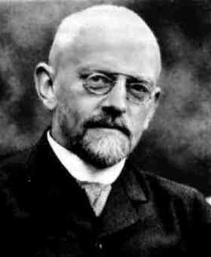

David Hilbert attended the gymnasium in his home town of Königsberg. After graduating from the gymnasium, he entered the University of Königsberg. There he went on to study under Lindemann for his doctorate which he received in 1885 for a thesis entitled Uber invariante Eigenschaften specieller binärer Formen, insbesondere der Kugelfunctionen. One of Hilbert's friends there was Minkowski, who was also a doctoral student at Königsberg, and they were to strongly influence each others mathematical progress.
In 1884 Hurwitz was appointed to the University of Königsberg and quickly became friends with Hilbert, a friendship which was another important factor in Hilbert's mathematical development. Hilbert was a member of staff at Königsberg from 1886 to 1895, being a Privatdozent until 1892, then as Extraordinary Professor for one year before being appointed a full professor in 1893.
In 1892 Schwarz moved from Göttingen to Berlin to occupy Weierstrass's chair and Klein wanted to offer Hilbert the vacant Göttingen chair. However Klein failed to persuade his colleagues and Heinrich Weber was appointed to the chair. Klein was probably not too unhappy when Weber moved to a chair at Strasbourg three years later since on this occasion he was successful in his aim of appointing Hilbert. So, in 1895, Hilbert was appointed to the chair of mathematics at the University of Göttingen, where he continued to teach for the rest of his career.
Hilbert's eminent position in the world of mathematics after 1900 meant that other institutions would have liked to tempt him to leave Göttingen and, in 1902, the University of Berlin offered Hilbert Fuchs' chair. Hilbert turned down the Berlin chair, but only after he had used the offer to bargain with Göttingen and persuade them to set up a new chair to bring his friend Minkowski to Göttingen.
Hilbert's first work was on invariant theory and, in 1888, he proved his famous Basis Theorem. Twenty years earlier Gordan had proved the finite basis theorem for binary forms using a highly computational approach. Attempts to generalise Gordan's work to systems with more than two variables failed since the computational difficulties were too great. Hilbert himself tried at first to follow Gordan's approach but soon realised that a new line of attack was necessary. He discovered a completely new approach which proved the finite basis theorem for any number of variables but in an entirely abstract way. Although he proved that a finite basis existed his methods did not construct such a basis.
In 1893 while still at Königsberg Hilbert began a work Zahlbericht on algebraic number theory. The German Mathematical Society requested this major report three years after the Society was created in 1890. The Zahlbericht (1897) is a brilliant synthesis of the work of Kummer, Kronecker and Dedekind but contains a wealth of Hilbert's own ideas. The ideas of the present day subject of 'Class field theory' are all contained in this work. Rowe, describes this work as:-
... not really a Bericht in the conventional sense of the word, but rather a piece of original research revealing that Hilbert was no mere specialist, however gifted. ... he not only synthesized the results of prior investigations ... but also fashioned new concepts that shaped the course of research on algebraic number theory for many years to come.Hilbert's work in geometry had the greatest influence in that area after Euclid. A systematic study of the axioms of Euclidean geometry led Hilbert to propose 21 such axioms and he analysed their significance. He published Grundlagen der Geometrie in 1899 putting geometry in a formal axiomatic setting. The book continued to appear in new editions and was a major influence in promoting the axiomatic approach to mathematics which has been one of the major characteristics of the subject throughout the 20th century.
Hilbert's famous 23 Paris problems challenged (and still today challenge) mathematicians to solve fundamental questions. Hilbert's famous speech The Problems of Mathematics was delivered to the Second International Congress of Mathematicians in Paris. It was a speech full of optimism for mathematics in the coming century and he felt that open problems were the sign of vitality in the subject:-
The great importance of definite problems for the progress of mathematical science in general ... is undeniable. ... [for] as long as a branch of knowledge supplies a surplus of such problems, it maintains its vitality. ... every mathematician certainly shares ..the conviction that every mathematical problem is necessarily capable of strict resolution ... we hear within ourselves the constant cry: There is the problem, seek the solution. You can find it through pure thought...Hilbert's problems included the continuum hypothesis, the well ordering of the reals, Goldbach's conjecture, the transcendence of powers of algebraic numbers, the Riemann hypothesis, the extension of Dirichlet's principle and many more. Many of the problems were solved during this century, and each time one of the problems was solved it was a major event for mathematics.
Today Hilbert's name is often best remembered through the concept of Hilbert space. Irving Kaplansky, explains Hilbert's work which led to this concept:-
Hilbert's work in integral equations in about 1909 led directly to 20th-century research in functional analysis (the branch of mathematics in which functions are studied collectively). This work also established the basis for his work on infinite-dimensional space, later called Hilbert space, a concept that is useful in mathematical analysis and quantum mechanics. Making use of his results on integral equations, Hilbert contributed to the development of mathematical physics by his important memoirs on kinetic gas theory and the theory of radiations.In 1915 Hilbert discovered the correct field equations for general relativity before Einstein but never claimed priority.
In 1934 and 1939 two volumes of Grundlagen der Mathematik were published which were intended to lead to a 'proof theory' a direct check for the consistency of mathematics. Gödel's paper of 1931 showed that this aim is impossible.
Hilbert contributed to many branches of mathematics, including invariants, algebraic number fields, functional analysis, integral equations, mathematical physics, and the calculus of variations. Hilbert's mathematical abilities were nicely summed up by Otto Blumenthal, his first student:-
In the analysis of mathematical talent one has to differentiate between the ability to create new concepts that generate new types of thought structures and the gift for sensing deeper connections and underlying unity. In Hilbert's case, his greatness lies in an immensely powerful insight that penetrates into the depths of a question. All of his works contain examples from far-flung fields in which only he was able to discern an interrelatedness and connection with the problem at hand. From these, the synthesis, his work of art, was ultimately created. Insofar as the creation of new ideas is concerned, I would place Minkowski higher, and of the classical great ones, Gauss, Galois, and Riemann. But when it comes to penetrating insight, only a few of the very greatest were the equal of Hilbert.Among Hilbert's students were Hermann Weyl, the famous world chess champion Lasker, and Zermelo.
Hilbert received many honours. In 1905 the Hungarian Academy of Sciences gave a special citation for Hilbert. In 1930 Hilbert retired and the city of Königsberg made him an honorary citizen of the city. He gave an address which ended with six famous words showing his enthusiasm for mathematics and his life devoted to solving mathematical problems:-
Wir müssen wissen, wir werden wissen - We must know, we shall know.
There is a Crater Hilbert on the moon.
Other Web sites:
There is a list of Hilbert's 23 problems at Clarke University, USA as well as the text of his 1901 speech.